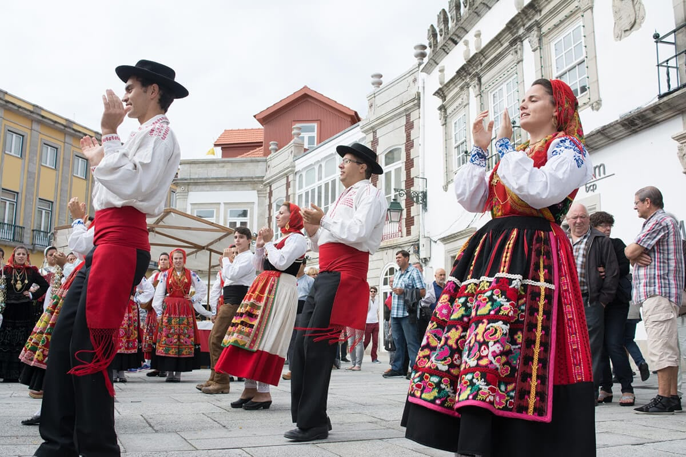
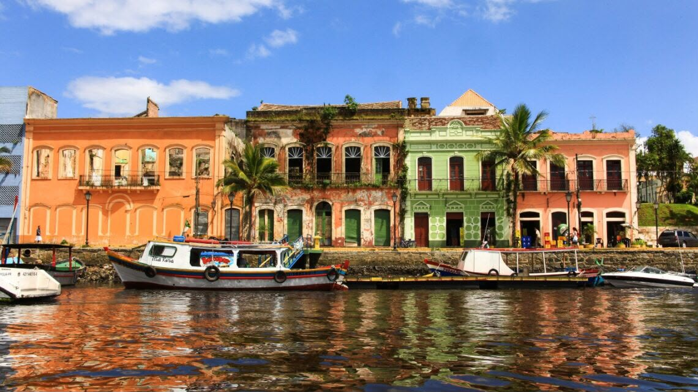

🏹 Povos Indígenas
A história do Paraná começa com a forte influência dos povos indígenas, que já habitavam a região antes da chegada dos europeus. Destacavam-se duas famílias linguísticas:
- Jê: Kaingang e Xokleng.
- Tupi-Guarani: Guarani e Xetá.
👑 Domínio Espanhol e Reduções Jesuíticas
O Paraná já pertenceu à Espanha. Em 1554, foi fundada a primeira vila às margens do rio Paraná. Com o passar do tempo, outras vilas foram criadas em busca de ouro e para a catequização dos indígenas.
No século XVI, os jesuítas fundaram diversas reduções para catequizar os indígenas. Todas essas reduções acabaram sendo destruídas pelos bandeirantes.
🏛️ Emancipação do Paraná
O Paraná foi emancipado da Província de São Paulo em 1853, passando a formar a Província do Paraná. A capital da nova província foi definida como Curitiba.
📦 Ciclos Econômicos
Os principais ciclos econômicos que contribuíram para a ocupação e o desenvolvimento do Paraná foram:
🚢 Imigração
Os primeiros imigrantes a chegar ao Paraná foram os alemães, que contribuíram significativamente para o povoamento e o desenvolvimento da região.
❓ Perguntas e Respostas
Os caminhos indígenas facilitaram a exploração e a ocupação do Paraná, pois eram utilizados pelos colonizadores para chegar ao interior, transportar mercadorias e fundar povoados. Muitas dessas trilhas deram origem a estradas e cidades.
A ocupação do Paraná foi impulsionada pela exploração de riquezas naturais, pelo tropeirismo, pela imigração europeia e pela expansão da agricultura, fatores que promoveram o povoamento e o desenvolvimento do estado.